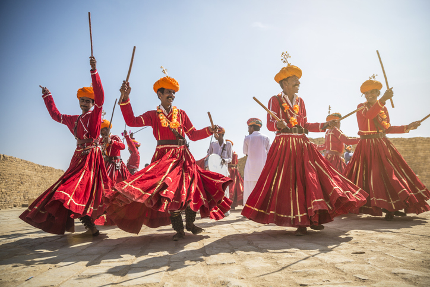

CULTURAL INDIA
HOME
ARTFORMS
LOGIN
SIGN UP

folk dance, generally, a type of dance that is a vernacular, usually recreational, expression of a past or present culture. The term folk dance was accepted until the mid-20th century.Logically speaking, the adjective folk should modify the noun dance to indicate a certain kind of dance and dancing and perhaps the style or some other distinguishing feature of the dance or performance. It should also imply who the performers are. However, the term folk dance, which has been in common use since the late 19th century, along with its parent term folklore, which was coined in 1846, is not as descriptive or uncontroversial as it might seem. Much of the problem lies in the attitudes and purposes of early scholars and their audience. Usually, the designation folk was used by those who did not consider themselves to belong to the folk and were confident that they knew which other people were the folk. Some of these observers described folk communities with condescension as peasants, simple or quaint people who were illiterate and unselfconscious, carrying on supposedly unsophisticated and ancient traditions. Such writers concluded that “true” folk dances were created anonymously and transmitted from person to person. Many scholars of the late 19th and early 20th centuries postulated a sort of Darwinian social evolution that passed from imagined beginnings through existing folk dances to arrive at modern recreational dances. This attitude, which fell out of favour by the 1930s, was part of a larger worldview that sometimes went so far as to place certain other groups of people farther down the human evolutionary tree from themselves and their peers.